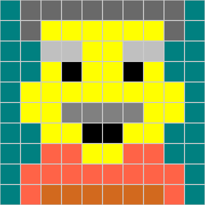
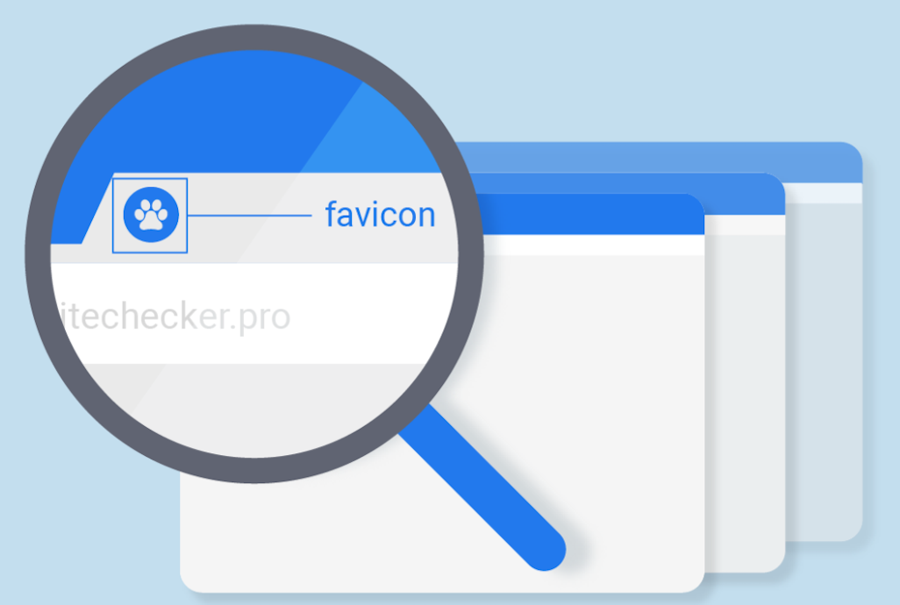

QCC/CUNYSoftware Engineering Micro-CredentialBoot CampLab# 7 | Date: 01/07/2020 | Anik BaruaWhat exactly is a favicon?
Favicon stands for favourite icon, located in the address bar of your website in the tab section. Usually it's the logo of the company that represents the brand in the website. When you bookmark a website, the icon shows up with the website name, and if you have the lot of tabs open, only the favicon is visible instead of the name. Below are just few examples to some favicons (with respectable links). 
How are favicons created?To create a favicon first you need a logo that will represent your site. Then using photoshop you will create a image in 64x64 pixel sqaure (So its easy to draw), and it can be cut down to 16x16 pixel. Then you have to save it as .jpg, .png or any regular image file. Favicon for website is usually an .ico file. So the image has to converted into an .ico file. Now you have move this file in the website root directory, and add it to html code of your website. To add it you can use- link rel="icon" type="image/png" href="filename.pngNow the favicon will be visible with your website in the tab. How did I create the favicon for this site?To create a favicon first I created a pixelation logo for my site in studio code. For the pixelation image I used hexadecimal instead of binary to have different colors. I used a 10x10 pixel with 24 bits per pixel for my image. The acutal image of my favicon is really small. After saving it, I moved the file in my html folder and used the code- link rel="icon" type="image/png" href="filename.png, to upload it on my site. That's how I created my favicon for the site. Below is the binary code of the favicon, and to
the right is the actual 10x10 image size. Below is the hexadecimal code of the favicon.
|
{kind=link}
{kind=link}